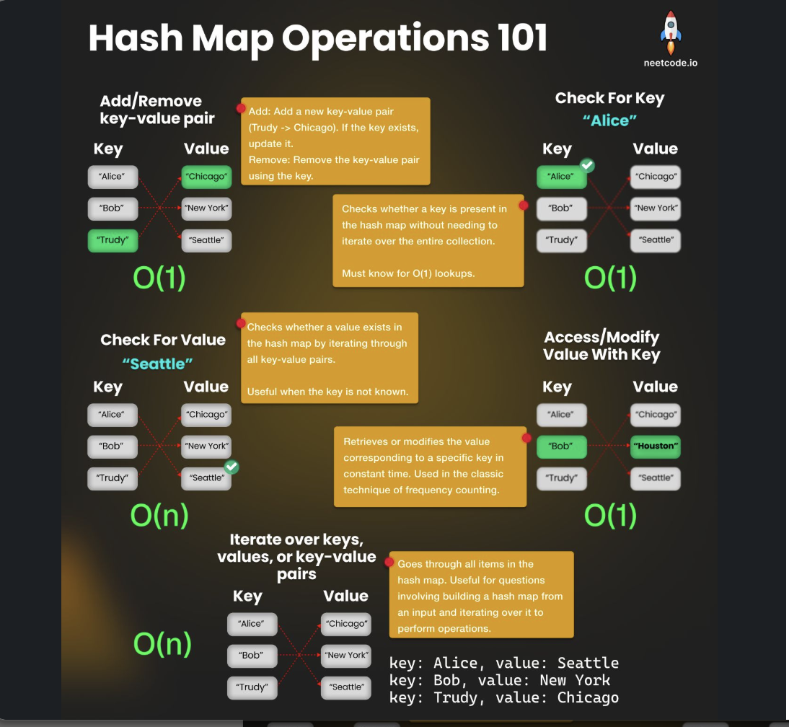
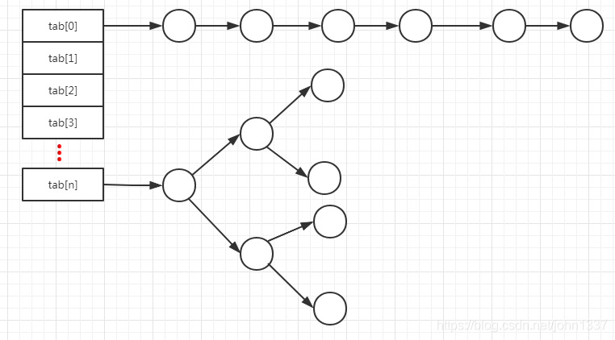
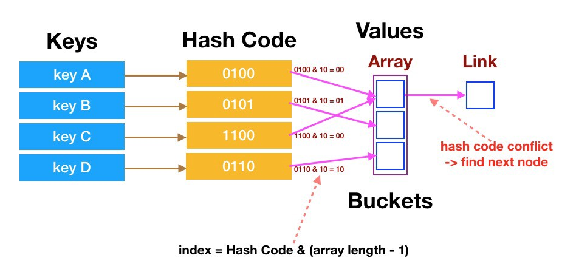
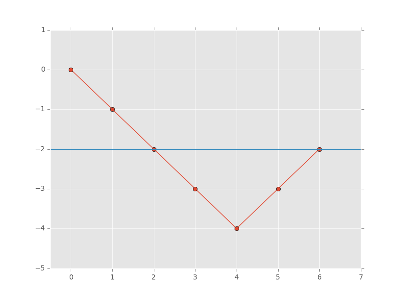

Hash Map
Last updated: Feb 28, 2026Table of Contents
- Overview
- Key Properties
- When Hash Collisions Occur
- Problem Categories
- 1. Counting and Frequency
- 2. Two Sum Variants and Complement Finding
- 3. Prefix Sum and Subarray Problems
- 4. Sliding Window with Hash Map
- 5. Design and Caching
- 6. Graph and Tree Problems with Hash Map
- Templates and Patterns
- Template 1: Counting/Frequency Pattern
- Template 2: Two Sum/Complement Finding
- Template 3: Prefix Sum with Hash Map
- Template 4: Sliding Window with Hash Map
- Template 5: Hash Map for Caching/Memoization
- Template 6: Graph Problems with Hash Map
- Template 7: TreeMap Pattern (Ordered Map)
- 0) Concept
- 0-1) Types
- 0-2) Pattern
- 1) General form
- 1-1) Basic OP
- 2) LC Example
- 2-1) Contiguous Array (LC 525)
- 2-1-1) Subarray Sums Divisible by K (LC 974)
- 2-2) Continuous Subarray Sum
- 2-3) Group Anagrams
- 2-3) Longest Substring Without Repeating Characters
- 2-4) Count Primes
- 2-5) Valid Sudoku
- 2-6) Pairs of Songs With Total Durations Divisible by 60
- 2-7) Subarray Sum Equals K
- 2-8) K-diff Pairs in an Array
- 2-9) Sentence Similarity
- 2-10) LRU Cache
- 2-11) Find All Anagrams in a String
- 2-12) Brick Wall
- 2-13) Maximum Size Subarray Sum Equals k
- 2-14) Smallest Common Region
- Problem Classification Table
- Category 1: Counting and Frequency (25 problems)
- Category 2: Two Sum Variants (15 problems)
- Category 3: Prefix Sum and Subarray (17 problems)
- Category 4: Sliding Window with Hash Map (12 problems)
- Category 5: Design and Caching (10 problems)
- Category 6: Graph and Tree with Hash Map (8 problems)
- Decision Framework
- Pattern Selection Flowchart
- Decision Questions
- Time Complexity Guide
- Interview Tips and Best Practices
- 🎯 Quick Recognition Patterns
- 💡 Key Insights to Remember
- 🔧 Implementation Best Practices
- ⚠️ Common Mistakes to Avoid
- 🏆 Advanced Techniques
- 📈 Performance Optimization
- 🎯 Interview Preparation Checklist
- 📚 Summary
Hash Map Cheatsheet
Overview
Hash Map (Hash Table/Dictionary) is a fundamental data structure that provides efficient key-value storage and retrieval operations.
Key Properties
- Average Time Complexity: O(1) for insert, delete, and search
- Worst Time Complexity: O(n) for insert, delete, and search (when all keys hash to same bucket)
- Space Complexity: O(n)
- Implementation: Array + Linked List/Red-Black Tree (Java HashMap)
- Hash Collisions: Handled via chaining or open addressing
When Hash Collisions Occur
- Load Factor > 0.75: Performance degrades
- Poor Hash Function: Many keys map to same bucket
- Java HashMap: Converts linked list to red-black tree when length > 8

Problem Categories
1. Counting and Frequency
Description: Track frequency of elements, characters, or patterns. Key Insight: Use hash map as counter to avoid nested loops. Examples:
- Character frequency in strings
- Element counting in arrays
- Anagram detection
- Most frequent elements
2. Two Sum Variants and Complement Finding
Description: Find pairs, triplets, or complements that satisfy specific conditions. Key Insight: Store elements and check for required complement. Examples:
- Two Sum, Three Sum, Four Sum
- Pair differences (k-diff pairs)
- Subarray sum problems
- Target sum combinations
3. Prefix Sum and Subarray Problems
Description: Use cumulative sums with hash map to find subarrays with target properties.
Key Insight: subarray[i,j] = prefixSum[j] - prefixSum[i-1]
Examples:
- Subarray sum equals K
- Continuous subarray sum
- Maximum size subarray sum equals K
- Binary array with equal 0s and 1s
4. Sliding Window with Hash Map
Description: Maintain a dynamic window while tracking element frequency or properties. Key Insight: Hash map maintains window state efficiently. Examples:
- Longest substring without repeating characters
- Minimum window substring
- Find all anagrams in string
- Permutation in string
5. Design and Caching
Description: Implement data structures or caching mechanisms using hash maps. Key Insight: Hash map provides O(1) access for cache operations. Examples:
- LRU Cache
- LFU Cache
- Design HashMap
- Design HashSet
6. Graph and Tree Problems with Hash Map
Description: Use hash map to store graph relationships, tree paths, or node mappings. Key Insight: Hash map simplifies complex relationship tracking. Examples:
- Clone graph
- Tree serialization/deserialization
- Find duplicate subtrees
- Lowest common ancestor with parent pointers
Templates and Patterns
Template 1: Counting/Frequency Pattern
# Universal Counting Template
def counting_pattern(arr):
count = {} # or collections.defaultdict(int)
result = []
# Count frequency
for item in arr:
count[item] = count.get(item, 0) + 1
# or count[item] += 1 with defaultdict
# Process based on frequency
for key, freq in count.items():
if meets_condition(freq):
result.append(key)
return result
# Examples: LC 49, LC 242, LC 451, LC 347, LC 692
Template 2: Two Sum/Complement Finding
# Two Sum Pattern Template
def two_sum_pattern(nums, target):
seen = {} # {value: index}
for i, num in enumerate(nums):
complement = target - num
if complement in seen:
return [seen[complement], i]
seen[num] = i
return []
# Variations:
# - Multiple pairs: collect all instead of returning first
# - K-diff pairs: check for num+k and num-k
# - Examples: LC 1, LC 167, LC 15, LC 532, LC 1010
Template 3: Prefix Sum with Hash Map
See detailed pattern explanation in 0-2) Pattern > Subarray Sum Count Pattern
# Prefix Sum Pattern Template
def prefix_sum_pattern(nums, target):
prefix_sum = 0
sum_count = {0: 1} # {sum: count/index}
result = 0
for num in nums:
prefix_sum += num
# Check if (prefix_sum - target) exists
if prefix_sum - target in sum_count:
result += sum_count[prefix_sum - target]
# Update current prefix sum count
sum_count[prefix_sum] = sum_count.get(prefix_sum, 0) + 1
return result
# For max length problems, store index instead of count:
# sum_index = {0: -1}, then calculate i - sum_index[prefix_sum - target]
# Examples: LC 560, LC 325, LC 525, LC 523
Key Differences by Problem Type:
- Count problems (LC 560, 930, 974): Store
{sum: count}, check then update- LC 974 variant: Use modulo
{remainder: count}, MUST handle negative remainders!
- LC 974 variant: Use modulo
- Max length problems (LC 325, 525): Store
{sum: first_index}, only update if new- LC 525 variant: Transform problem (0→-1, 1→+1), initialize with
{0: -1}, store first occurrence only
- LC 525 variant: Transform problem (0→-1, 1→+1), initialize with
- Existence problems (LC 523): Store
{sum: any_index}, just need to find one
Template 4: Sliding Window with Hash Map
# Sliding Window with HashMap Template
def sliding_window_hashmap(s, pattern):
if len(pattern) > len(s):
return []
pattern_count = {}
window_count = {}
# Count pattern frequency
for char in pattern:
pattern_count[char] = pattern_count.get(char, 0) + 1
left = 0
result = []
for right in range(len(s)):
# Expand window
char = s[right]
window_count[char] = window_count.get(char, 0) + 1
# Contract window if needed
while window_size_condition_met():
# Check if current window is valid
if window_count == pattern_count:
result.append(left)
# Remove leftmost character
left_char = s[left]
window_count[left_char] -= 1
if window_count[left_char] == 0:
del window_count[left_char]
left += 1
return result
# Examples: LC 3, LC 76, LC 438, LC 567
Template 5: Hash Map for Caching/Memoization
# Caching/Memoization Template
class CacheTemplate:
def __init__(self, capacity):
self.capacity = capacity
self.cache = {} # key -> value
self.usage = {} # key -> usage_info
def get(self, key):
if key in self.cache:
self.update_usage(key)
return self.cache[key]
return -1
def put(self, key, value):
if len(self.cache) >= self.capacity:
self.evict()
self.cache[key] = value
self.update_usage(key)
def update_usage(self, key):
# Update usage tracking
pass
def evict(self):
# Remove least recently/frequently used
pass
# Examples: LC 146 (LRU), LC 460 (LFU)
Template 6: Graph Problems with Hash Map
# Graph with HashMap Template
def graph_hashmap_pattern(graph_input):
# Build adjacency list/map
graph = {} # node -> [neighbors] or node -> {neighbor: weight}
for edge in graph_input:
node1, node2 = edge[0], edge[1]
if node1 not in graph:
graph[node1] = []
if node2 not in graph:
graph[node2] = []
graph[node1].append(node2)
graph[node2].append(node1) # for undirected
# Process using DFS/BFS with visited tracking
visited = set()
result = []
def dfs(node):
if node in visited:
return
visited.add(node)
result.append(node)
for neighbor in graph.get(node, []):
dfs(neighbor)
return result
# Examples: LC 133, LC 200, LC 694, LC 1257
Template 7: TreeMap Pattern (Ordered Map)
# Python - SortedDict (from sortedcontainers)
from sortedcontainers import SortedDict
# TreeMap Pattern Template
def treemap_pattern(data):
# TreeMap maintains sorted order by key
tree_map = SortedDict()
# Basic operations
tree_map[key] = value # O(log n) insert
value = tree_map.get(key) # O(log n) search
del tree_map[key] # O(log n) delete
# Ordered operations
first_key = tree_map.keys()[0] if tree_map else None # Min key
last_key = tree_map.keys()[-1] if tree_map else None # Max key
# Range queries
# Get all keys in sorted order
for key in tree_map.keys():
process(key, tree_map[key])
# Find floor/ceiling (closest keys)
# bisect_left/bisect_right for approximate match
import bisect
keys = list(tree_map.keys())
idx = bisect.bisect_left(keys, target) # Floor index
return tree_map
# Examples: LC 853, LC 729/731/732, LC 846, LC 352, LC 981
// Java - TreeMap Pattern
import java.util.*;
// TreeMap Pattern Template
public void treeMapPattern(int[] data) {
// TreeMap maintains sorted order by key (Red-Black Tree)
TreeMap<Integer, Integer> treeMap = new TreeMap<>();
// Basic operations - O(log n)
treeMap.put(key, value); // Insert
Integer value = treeMap.get(key); // Search
treeMap.remove(key); // Delete
// Ordered operations - O(log n)
Integer firstKey = treeMap.firstKey(); // Min key
Integer lastKey = treeMap.lastKey(); // Max key
Integer floorKey = treeMap.floorKey(k); // Largest key <= k
Integer ceilKey = treeMap.ceilingKey(k); // Smallest key >= k
// Lower/Higher (exclusive)
Integer lower = treeMap.lowerKey(k); // Largest key < k
Integer higher = treeMap.higherKey(k); // Smallest key > k
// Range queries - O(k log n) where k is range size
Map.Entry<Integer, Integer> firstEntry = treeMap.firstEntry();
Map.Entry<Integer, Integer> lastEntry = treeMap.lastEntry();
// Iterate in sorted order - O(n)
for (Map.Entry<Integer, Integer> entry : treeMap.entrySet()) {
int key = entry.getKey();
int val = entry.getValue();
// Process in sorted order
}
// SubMap views (range queries)
SortedMap<Integer, Integer> subMap = treeMap.subMap(fromKey, toKey);
SortedMap<Integer, Integer> headMap = treeMap.headMap(toKey);
SortedMap<Integer, Integer> tailMap = treeMap.tailMap(fromKey);
}
TreeMap vs HashMap Comparison:
| Feature | HashMap | TreeMap |
|---|---|---|
| Ordering | No ordering | Sorted by key |
| Underlying Structure | Hash Table + Linked List/Red-Black Tree (collision) | Red-Black Tree |
| Insert/Delete/Search | O(1) average, O(n) worst | O(log n) |
| Iteration | No specific order | Sorted order by key |
| Floor/Ceiling | Not supported | O(log n) |
| Range Queries | Not supported | O(k log n) |
| Use Case | Fast lookups, no ordering needed | Ordered iteration, range queries, floor/ceiling |
| Memory | Less (hash table) | More (tree nodes + pointers) |
When to Use TreeMap:
- Need keys in sorted order
- Need floor/ceiling operations (closest key)
- Need range queries (all keys in [a, b])
- Need first/last key efficiently
- Problems involving intervals, ranges, or ordering constraints
When NOT to Use TreeMap:
- Only need fast O(1) lookups without ordering
- Memory is constrained (TreeMap uses more memory)
- Don’t need ordered operations (HashMap is faster)
Common TreeMap Patterns:
-
Pattern 1: Ordered Map for Sorting
// LC 853 - Car Fleet // Convert HashMap to TreeMap for sorted iteration Map<Integer, Integer> map = new HashMap<>(); // ... populate map ... TreeMap<Integer, Integer> sorted = new TreeMap<>(map); -
Pattern 2: Interval Management
// LC 729/731/732 - My Calendar series // Use TreeMap to check overlapping intervals TreeMap<Integer, Integer> calendar = new TreeMap<>(); public boolean book(int start, int end) { Integer prev = calendar.floorKey(start); Integer next = calendar.ceilingKey(start); if ((prev == null || calendar.get(prev) <= start) && (next == null || end <= next)) { calendar.put(start, end); return true; } return false; } -
Pattern 3: Consecutive Elements
// LC 846 - Hand of Straights // Use TreeMap to process smallest elements first TreeMap<Integer, Integer> count = new TreeMap<>(); // ... count frequency ... while (!count.isEmpty()) { int first = count.firstKey(); // Process consecutive sequence starting from first } -
Pattern 4: Range/Stream Problems
// LC 352 - Data Stream as Disjoint Intervals // Maintain disjoint intervals in sorted order TreeMap<Integer, int[]> intervals = new TreeMap<>(); public void addNum(int val) { Integer lower = intervals.floorKey(val); Integer higher = intervals.ceilingKey(val); // Merge intervals if needed }
Classic LeetCode Problems:
| Problem | LC# | Difficulty | Key TreeMap Operation |
|---|---|---|---|
| Car Fleet | 853 | Medium | Sort by position (key) |
| My Calendar I | 729 | Medium | floorKey/ceilingKey for overlap check |
| My Calendar II | 731 | Medium | Count overlapping bookings |
| My Calendar III | 732 | Hard | Maximum overlapping count |
| Hand of Straights | 846 | Medium | firstKey for smallest element |
| Data Stream as Disjoint Intervals | 352 | Hard | Merge intervals with floor/ceiling |
| Time Based Key-Value Store | 981 | Medium | floorKey for timestamp lookup |
| Count of Smaller Numbers After Self | 315 | Hard | Ordered iteration |
| Contains Duplicate III | 220 | Medium | floorKey/ceilingKey for range check |
| The Skyline Problem | 218 | Hard | Multiset with TreeMap |
Example: LC 853 - Car Fleet
# Python - LC 853 Car Fleet
def carFleet(target, position, speed):
# Use sorted iteration (similar to TreeMap)
cars = sorted(zip(position, speed), reverse=True) # Sort by position descending
stack = []
for pos, spd in cars:
time = (target - pos) / spd # Time to reach target
if not stack or time > stack[-1]:
stack.append(time)
return len(stack)
# Alternative using SortedDict
from sortedcontainers import SortedDict
def carFleet_v2(target, position, speed):
car_map = SortedDict()
for p, s in zip(position, speed):
car_map[-p] = s # Negative for reverse order
fleets = 0
prev_time = 0
for neg_pos, spd in car_map.items():
pos = -neg_pos
time = (target - pos) / spd
if time > prev_time:
fleets += 1
prev_time = time
return fleets
// Java - LC 853 Car Fleet
/**
* time = O(N log N)
* space = O(N)
*/
public int carFleet(int target, int[] position, int[] speed) {
// Build HashMap first
Map<Integer, Integer> map = new HashMap<>();
for (int i = 0; i < position.length; i++) {
map.put(position[i], speed[i]);
}
// Convert to TreeMap for sorted iteration (descending order)
TreeMap<Integer, Integer> treeMap = new TreeMap<>(Collections.reverseOrder());
treeMap.putAll(map);
int fleets = 0;
double prevTime = 0;
// Iterate from position closest to target (sorted order)
for (Map.Entry<Integer, Integer> entry : treeMap.entrySet()) {
int pos = entry.getKey();
int spd = entry.getValue();
double time = (double)(target - pos) / spd;
// If current car takes longer, it forms a new fleet
if (time > prevTime) {
fleets++;
prevTime = time;
}
}
return fleets;
}
Example: LC 729 - My Calendar I
// Java - LC 729 My Calendar I
/**
* time = O(log N) per operation
* space = O(N)
*/
class MyCalendar {
TreeMap<Integer, Integer> calendar;
public MyCalendar() {
calendar = new TreeMap<>();
}
public boolean book(int start, int end) {
// Find largest start time <= current start
Integer prev = calendar.floorKey(start);
// Find smallest start time >= current start
Integer next = calendar.ceilingKey(start);
// Check no overlap with previous booking
if (prev != null && calendar.get(prev) > start) {
return false;
}
// Check no overlap with next booking
if (next != null && next < end) {
return false;
}
calendar.put(start, end);
return true;
}
}
# Python - LC 729 My Calendar I
from sortedcontainers import SortedDict
class MyCalendar:
"""
time = O(log N) per operation
space = O(N)
"""
def __init__(self):
self.calendar = SortedDict()
def book(self, start: int, end: int) -> bool:
# Find previous and next bookings
idx = self.calendar.bisect_left(start)
# Check previous booking
if idx > 0:
prev_start = self.calendar.keys()[idx - 1]
if self.calendar[prev_start] > start:
return False
# Check next booking
if idx < len(self.calendar):
next_start = self.calendar.keys()[idx]
if next_start < end:
return False
self.calendar[start] = end
return True
Interview Tips for TreeMap Problems:
-
Recognition Patterns:
- “sorted order”, “smallest/largest”, “floor/ceiling” → Think TreeMap
- “overlapping intervals” → TreeMap with floorKey/ceilingKey
- “consecutive elements” → TreeMap.firstKey() for greedy processing
- “range queries” → TreeMap.subMap()
-
Common Mistakes:
- Forgetting O(log n) complexity vs O(1) for HashMap
- Not handling null returns from floor/ceiling operations
- Using TreeMap when HashMap would suffice
- Not considering memory overhead of tree structure
-
Optimization:
- If only need sorted iteration once, sort array instead (O(n log n) vs maintaining TreeMap)
- If range queries are rare, consider lazy sorting
- For Python,
sortedcontainerslibrary provides efficient SortedDict
-
Edge Cases:
- Empty TreeMap (firstKey/lastKey throw exceptions)
- Null values from floor/ceiling operations
- Duplicate keys (TreeMap doesn’t allow, use value as counter)
- Reverse order iteration (use descendingMap() in Java)
0) Concept
-
- Low level : Array + Linked list / red-black tree
- if Linked list length > 8 -> transform Linked list to red-black tree
- if Linked list length < 6 -> transform red-black tree back to Linked list
- Low level : Array + Linked list / red-black tree
-
FAQ
- why hashmap search time complexity ~= O(1) ? explain ?
- TL;DR : O(1) is avg and best case. worst case could be O(N) (hash collision)
- hash func matters -> how to storage data & possible hash collision happens
- OP
- insert
- get key, get hash val via hash func
- find bucket in memory based on hash val
- save key and value in the bucket
- query
- get index based on key
- find bucket location based on index
- NOTE !!! use bit op (
int pos = (n - 1) & hash), so this op can be O(1) time complexity. (find bucket address directly, NO need to loop over all items)
- NOTE !!! use bit op (
- loop over all elements under that key (if there is one element, then do once)
- return value


- insert
- ref 1
- ref 2
- why hashmap search time complexity ~= O(1) ? explain ?
-
LC Ref
0-1) Types
-
N sum:
-
Prefix problems
- prefix_sum.md
- Continous sum
- LC 525 : Contiguous Array ⭐ See detailed pattern
- Transform + Prefix Sum: 0→-1, 1→+1, store {count: first_index}
- LC 523 : Continuous Subarray Sum
- LC 525 : Contiguous Array ⭐ See detailed pattern
- Pair of sums
- LC 1010 : Pairs of Songs With Total Durations Divisible by 60
- Sub array sum
- LC 560 : Subarray Sum Equals K
TODO : note this as pattern!!!
- LC 325: Maximum Size Subarray Sum Equals k
prefix sum+ hashmap
- LC 974: Subarray Sums Divisible by K ⭐ See detailed pattern
- Prefix Sum + Modulo: {remainder: count}, handle negative remainders!
subarray[i,j] = prefixSum[j] - prefixSum[i-1] so, to find a subarray equals k -> prefixSum[j] - prefixSum[i-1] = k -> prefixSum[j] - k = prefixSum[i-1] -> so all need to do is : check if "prefixSum[j] - k" is in map - LC 560 : Subarray Sum Equals K
- check
permutaion sub string- LC 567
// LC 567 // ... /** NOTE !!! * * we use below trick to * * -> 1) check if `new reached s2 val` is in s1 map * -> 2) check if 2 map are equal * * -> so we have more simple code, and clean logic */ if (map2.equals(map1)) { return true; } // ...
-
Check with
letest existed idx- LC 763 Partition Labels
-
Top
kelement (with PQ)- LC 347, 215, 692
-
Any problems with below
- need to cache
- avoid double loop
0-2) Pattern
Subarray Sum Count Pattern (LC 560 Core Pattern)
Core Concept: Use hashmap to count ALL subarray combinations that sum to target in O(N) time with single loop.
Key Insight:
If we want subarray[i,j] to sum to k:
presum[j] - presum[i-1] = k
→ presum[i-1] = presum[j] - k
So at index j, check if (presum[j] - k) exists in map!
Critical Implementation Details:
-
Use Count, NOT Index:
Map<Integer, Integer> map = new HashMap<>(); // {prefixSum: count}- Same prefix sum can occur MULTIPLE times
- We need to count ALL valid subarrays, not just find one
- Example:
[1, -1, 1, -1]with k=0 has multiple solutions
-
Initialize with
map.put(0, 1):map.put(0, 1); // Handle subarrays starting from index 0- When
presum[j] == k, thenpresum[j] - k = 0 - Need to count these subarrays starting from beginning
- When
-
Check BEFORE Update (Critical Order):
for (int num : nums) { presum += num; // 1. CHECK first: count how many previous prefix sums = (presum - k) if (map.containsKey(presum - k)) { count += map.get(presum - k); // Add ALL occurrences } // 2. UPDATE after: add current prefix sum for future iterations map.put(presum, map.getOrDefault(presum, 0) + 1); }- Why this order? Prevents counting current subarray with itself
- Current prefix sum should only be available for FUTURE iterations
Why This Pattern Gets ALL Combinations:
- Map stores ALL previously seen prefix sums with their counts
- When we check
presum - k, we get count of ALL previous occurrences - Each previous occurrence represents a valid starting point
count += map.get(presum - k)adds ALL valid subarrays ending at current index
Example Walkthrough (nums = [1,1,1], k = 2):
i=0: num=1, presum=1
- Check: (1-2)=-1 not in map → count=0
- Update: map={0:1, 1:1}
i=1: num=1, presum=2
- Check: (2-2)=0 in map, count += map[0] = 1 → count=1
- Update: map={0:1, 1:1, 2:1}
i=2: num=1, presum=3
- Check: (3-2)=1 in map, count += map[1] = 1 → count=2
- Update: map={0:1, 1:1, 2:1, 3:1}
Result: count=2 (subarrays [1,1] and [1,1])
Related LC Problems (Same Pattern):
- LC 560: Subarray Sum Equals K (exact pattern)
- LC 325: Maximum Size Subarray Sum Equals k (store index instead of count)
- LC 930: Binary Subarrays with Sum
- LC 974: Subarray Sums Divisible by K (use modulo
{remainder: count}, handle negatives!)
Java Implementation Template:
public int subarraySum(int[] nums, int k) {
// Map: {prefixSum: count} - NOT {prefixSum: index}!
Map<Integer, Integer> map = new HashMap<>();
map.put(0, 1); // Handle subarrays from index 0
int presum = 0;
int count = 0;
for (int num : nums) {
presum += num;
// Check if (presum - k) exists: presum - x = k → x = presum - k
if (map.containsKey(presum - k)) {
count += map.get(presum - k); // Add ALL occurrences
}
// Update map AFTER checking (critical order!)
map.put(presum, map.getOrDefault(presum, 0) + 1);
}
return count;
}
When to Use Count vs Index:
| Problem Type | Map Value | Example | Special Notes |
|---|---|---|---|
| Count ALL subarrays | count |
LC 560, 930, 974 | Check before update |
| Count (with modulo) | count |
LC 974 | Use remainder as key; handle negatives! |
| Find LONGEST subarray | index (first occurrence) |
LC 325, 525 | Store only first occurrence |
| Find LONGEST (with transformation) | index (first occurrence) |
LC 525 | Transform 0→-1, 1→+1; init {0:-1} |
| Find if EXISTS | boolean/index |
LC 523 | Any occurrence works |
Common Mistakes:
- ❌ Using
{prefixSum: index}for counting problems - ❌ Updating map before checking (causes self-counting)
- ❌ Forgetting
map.put(0, 1)initialization - ❌ Not handling the case where prefix sum itself equals k
- ❌ [LC 974] Forgetting to handle negative remainders (Java/Python
-7 % 5 = -2, need to add k to get 3)
1) General form
-
Definition
-
When to use
- Use case that need data IO with ~ O(1) time complexity
- optimization via cache (space - time tradeoff)
sum, pair, continuous- avoid double loop (O(N^2))
-
When Not to use
- When data is time sequence
- When data is in ordering
- https://www.reddit.com/r/learnprogramming/comments/29t4s4/when_is_it_bad_to_use_a_hash_table/
-
Hash Collisions
- Chaining
- Open addressing
- hash_map_collisions.md
-
Ref
1-1) Basic OP
get: get value from dict with default value if key not existed
In [10]: d = {'a': 1, 'b': 2}
...: d['a']
Out[10]: 1
In [11]: d.get('a')
Out[11]: 1
In [12]: d.get('c', 0)
Out[12]: 0
In [13]: d.get('z')
In [14]:
#-------------------------------------------------------------------------------
# setdefault : will creatte key if key NOT existed (with value as well if defined)
#-------------------------------------------------------------------------------
# syntax
d.setdefault(new_key)
d.setdefault(new_key, new_value)
# 662 Maximum Width of Binary Tree
car = {
"brand": "Ford",
"model": "Mustang",
"year": 1964
}
# example 1) insert key "my_key", since my_key not existed, -> make it as new key and value as None (since not defined)
car.setdefault("my_key")
print (car)
# In [18]: car
# Out[18]: {'brand': 'Ford', 'model': 'Mustang', 'year': 1964, 'my_key': None}
# example 2) insert key "color", since my_key not existed, -> make it as new key and value as white
car.setdefault("color", "white")
print (car)
# Out[22]:
# {'brand': 'Ford',
# 'model': 'Mustang',
# 'year': 1964,
# 'my_key': None,
# 'color': 'white'}
Sorton hashmap (dict)
# https://stackoverflow.com/questions/613183/how-do-i-sort-a-dictionary-by-value
x = {1: 2, 3: 4, 4: 3, 2: 1, 0: 0}
In [11]: x.items()
Out[11]: dict_items([(1, 2), (3, 4), (4, 3), (2, 1), (0, 0)])
#----------------------------------
# Sort hashMap by key/value !!!
#----------------------------------
x = {1: 2, 3: 4, 4: 3, 2: 1, 0: 0}
# note : have to use sorted(xxx, key=yyy), instead of xxx.sorted(....)
### NOTE this !!! : x.items()
sorted_x = sorted(x.items(), key=lambda kv: kv[1])
print (sorted_x)
# [(0, 0), (2, 1), (1, 2), (4, 3), (3, 4)]
x = {1: 2, 3: 4, 4: 3, 2: 1, 0: 0}
sorted_x = sorted(x.items(), key=lambda kv: kv[0])
print (sorted_x)
# [(0, 0), (1, 2), (2, 1), (3, 4), (4, 3)]
# 451 Sort Characters By Frequency
import collections
class Solution(object):
def frequencySort(self, s):
count = collections.Counter(s)
count_dict = dict(count)
"""
NOTE this !!!
1. use sorted()
2. count_dict.items()
"""
count_tuple_sorted = sorted(count_dict.items(), key=lambda kv : -kv[1])
res = ''
for item in count_tuple_sorted:
res += item[0] * item[1]
return res
# dict values -> array
In [6]:
...: mydict = {'a':['a1','a2','a3'], 'b':['b1','b2','b3']}
...:
...: res = [mydict[x] for x in mydict]
...:
...: print (res)
[['a1', 'a2', 'a3'], ['b1', 'b2', 'b3']]
# LC 049 Group Anagrams
# V0
# IDEA : HASH TABLE
class Solution:
def groupAnagrams(self, strs):
res = {}
for item in strs:
k = ''.join(sorted(item)) # sort the string
if k not in res: # check if exists in res
res[k] = []
res[k].append(item) # if same, put all the same string into dict k
return [res[x] for x in res] # output the result
- Get
max indexfor each element in a string
s = 'ababcbacadefegdehijhklij'
{k:v for k,v in enumerate(s)}
# LC 763
# V0
# IDEA : GREEDY
class Solution(object):
def partitionLabels(self, s):
d = {val:idx for idx, val in enumerate(list(s))}
#print (d)
res = []
tmp = set()
for idx, val in enumerate(s):
#print ("idx = " + str(idx) + " tmp = " + str(tmp) + "idx == d[val] = " + str(idx == d[val]))
"""
### have to fit 2 CONDITIONS so we can split the string
# -> 1) the element has "last time exist index" with current index
# -> 2) ALL of the elements in cache with "last time exist index" should <= current index
"""
if idx == d[val] and all(idx >= d[t] for t in tmp):
res.append(idx+1)
else:
tmp.add(val)
_res = [res[0]] + [ res[i] - res[i-1] for i in range(1, len(res)) ]
return _res
# V0'
# IDEA : GREEDY
class Solution(object):
def partitionLabels(self, S):
# note : this trick for get max index for each element in S
lindex = { c: i for i, c in enumerate(S) }
j = anchor = 0
ans = []
for i, c in enumerate(S):
### NOTE : trick here
# -> via below line of code, we can get the max idx of current substring which "has element only exist in itself"
# -> e.g. the index we need to do partition
j = max(j, lindex[c])
print ("i = " + str(i) + "," + " c = " + str(c) + "," + " j = " + str(j) + "," + " ans = " + str(ans))
if i == j:
ans.append(j - anchor + 1)
anchor = j + 1
return ans
- Get pairs with specific sum
# LC 1010 Pairs of Songs With Total Durations Divisible by 60
d = {}
res = 0
DURATION = some_duration
for num in nums:
tmp = num % DURATION # let's say sum is multiply by 60
### NOTICE THIS : (60 - tmp) % 60
if (DURATION - tmp) % DURATION in d:
res += d[(DURATION - tmp) % DURATION]
if tmp not in d:
d[tmp] = 1
else:
d[tmp] += 1
- Get
sub array sum
# (algorithm book (labu) p.350)
my_array = [1,2,3,4,5]
my_array_pre = [0] * (len(my_array)+1)
cur = 0
for i in range(len(my_array)):
cur += my_array[i]
my_array_pre[i+1] += cur
# In [17]: print ("my_array = " + str(my_array))
# ...: print ("my_array_pre = " + str(my_array_pre))
# my_array = [1, 2, 3, 4, 5]
# my_array_pre = [0, 1, 3, 6, 10, 15]
#-----------------------------------------------
# Get sub array sum !!!!!!!
# -> nums[i..j] sum = preSum[j+1] - preSum[i]
#-----------------------------------------------
# example 1 : sum of [1,2]
my_array_pre[1+1] - my_array_pre[0] # 1's index is 0, and 2's index is 1. (my_array = [1, 2, 3, 4, 5])
# example 2 : sum of [2,3,4]
my_array_pre[3+1] - my_array_pre[1] # 2's index is 1, and 4's index is 3. (my_array = [1, 2, 3, 4, 5])
- Longest Substring
# LC 003
# 2 pointers + dict
# ....
l = 0
d = {}
res = 0
for r in range(len(s)):
if s[r] in d:
l = max(l, d[s[r]]+1)
d[s[r]] = r
res = max(res, r-l+1)
# ...
2) LC Example
2-1) Contiguous Array (LC 525)
Core Pattern: Transform + Prefix Sum + HashMap
Key Concept
Finding if there are at least 2 indexes with SAME count (running sum).
This is the same as finding any 2 x-axis with same y-axis in the visualization below.
Pattern Breakdown
1. Problem Transformation:
Transform the binary array:
- Treat 0 as -1
- Treat 1 as +1
Why? Equal 0s and 1s → sum of transformed array = 0
2. HashMap Structure:
Map<Integer, Integer> map = new HashMap<>();
// {count: first_index_where_count_occurred}
map.put(0, -1); // Initialize for subarrays starting at index 0
3. Core Logic:
count: running sum (cumulative)
- +1 for each 1
- -1 for each 0
If count(i) == count(j) where i < j:
→ Elements between i and j sum to 0
→ Subarray [i+1, j] is balanced (equal 0s and 1s)
→ Length = j - i
4. Why Store FIRST Occurrence Only?
To maximize length, we want the earliest index with this count.
If count appears at indices [3, 7, 10]:
- Store index 3
- When we see count again at index 10, length = 10 - 3 = 7 (maximum)
5. Why Initialize map.put(0, -1)?
If from index 0 to i, count = 0:
→ Entire subarray [0, i] is balanced
→ Length = i - (-1) = i + 1 ✓
Without this initialization, we'd miss subarrays starting at index 0.
Visual Example
Sequence: [0, 0, 0, 0, 1, 1]
Count progression: 0 → -1 → -2 → -3 → -4 → -3 → -2
The longest subarray has equal 0s and 1s when count returns to -2 (indices 1 and 5).
Length = 5 - 1 = 4: [0, 1, 1, 1] wait, that’s wrong…
Actually, the charts show changes VS index of the sequence. We can find the longest subarray length is 4 (index 2 to 5), since index 2 and index 5 have the same count → count at index 2 and index 5 are the same (-2).

Mathematical Reasoning
Why Same Count Means Balanced Subarray:
Let count(i) = cumulative sum at index i
If count(i) == count(j) where i < j:
count(j) - count(i) = 0
This means:
sum of elements from index (i+1) to j = 0
In transformed array (0→-1, 1→+1):
sum = 0 means equal number of -1s and +1s
→ equal number of 0s and 1s in original array
Implementation Template
// Java Template
public int findMaxLength(int[] nums) {
// Map: {count: first_index_where_count_occurred}
Map<Integer, Integer> map = new HashMap<>();
// Initialize: handle subarrays starting at index 0
map.put(0, -1);
int maxLen = 0;
int count = 0;
for (int i = 0; i < nums.length; i++) {
// Transform: 0 → -1, 1 → +1
count += (nums[i] == 1) ? 1 : -1;
// If count seen before: calculate subarray length
if (map.containsKey(count)) {
maxLen = Math.max(maxLen, i - map.get(count));
} else {
// Store FIRST occurrence only (for max length)
map.put(count, i);
}
}
return maxLen;
}
# Python Template
def findMaxLength(nums):
# Map: {count: first_index_where_count_occurred}
d = {0: -1} # Initialize for subarrays starting at index 0
max_len = 0
count = 0
for i, num in enumerate(nums):
# Transform: 0 → -1, 1 → +1
count += 1 if num == 1 else -1
# If count seen before: calculate subarray length
if count in d:
max_len = max(max_len, i - d[count])
else:
# Store FIRST occurrence only (for max length)
d[count] = i
return max_len
Key Differences from LC 560 Pattern
| Aspect | LC 560 (Subarray Sum K) | LC 525 (Contiguous Array) |
|---|---|---|
| Goal | Count ALL subarrays | Find LONGEST subarray |
| Map Value | count (occurrences) |
index (first occurrence) |
| Map Update | Always increment count | Only if new count |
| Check Formula | presum - k |
Same count |
| Initialization | {0: 1} |
{0: -1} |
Related Problems (Same Pattern)
- LC 525: Contiguous Array (exactly this pattern)
- LC 1124: Longest Well-Performing Interval (similar transformation)
- LC 523: Continuous Subarray Sum (modulo transformation)
- LC 325: Maximum Size Subarray Sum Equals k (prefix sum + index)
# 525 Contiguous Array
# V0
# IDEA : HashMap
# -> SET UP A DICT,
# -> FIND MAX SUB ARRAY LENGH WHEN COUNT(0) == COUNT(1)
# -> (WHEN cur in _dict, THERE IS THE COUNT(0) == COUNT(1) CASE)
# explaination : https://leetcode.com/problems/contiguous-array/discuss/99655/python-on-solution-with-visual-explanation
class Solution(object):
def findMaxLength(self, nums):
# edge case
if len(nums) <= 1:
return 0
# note this edge case
if len(nums) == 2:
if nums.count(0) == nums.count(1):
return 2
else:
return 0
# NOTE !!! : init hash map like below (idx=0, no solution, for [0,1,1] case)
d = {0:-1} # {tmp_sum : index}
tmp = 0
res = 0
for k, v in enumerate(nums):
if v == 1:
tmp += 1
else:
tmp -= 1
"""
Case 1 : if tmp sum in dict
# NOTE THIS : if tmp in d, return the max of (res,cur-index - index) from d with same cur-value
"""
if tmp in d:
res = max(res, k - d[tmp])
"""
Case 2 : if tmp sum NOT in dict
# NOTE THIS : if tmp not in d, then use its cur value as key, index as value
"""
else:
d[tmp] = k ### NOTE : we just need to add index to dict at once, since what we need is MAX len of continous subarray with condition, so we only add 1st index to dist will make this work (max len subarray)
return res
# V0'
# https://github.com/yennanliu/CS_basics/blob/master/leetcode_python/Tree/contiguous-array.py
# explanation : https://leetcode.com/problems/contiguous-array/discuss/99655/python-on-solution-with-visual-explanation
# HASH MAP FIND EQUAL 0, 1
class Solution(object):
def findMaxLength(self, nums):
r = 0
cur = 0
### NOTE : WE HAVE TO INIT DICT LIKE BELOW
# https://blog.csdn.net/fuxuemingzhu/article/details/82667054
_dict = {0:-1}
for k, v in enumerate(nums):
if v == 1:
cur += 1
else:
cur -= 1
if cur in _dict:
r = max(r, k - _dict[cur])
else:
_dict[cur] = k
return r
2-1-1) Subarray Sums Divisible by K (LC 974)
Core Pattern: Prefix Sum + Modular Arithmetic + HashMap
Key Concept
Count ALL subarrays whose sum is divisible by K using remainder tracking.
If two prefix sums have the same remainder mod K, their difference is divisible by K.
Pattern Breakdown
1. Mathematical Foundation:
If prefix[i] % k == prefix[j] % k (where j < i)
Then:
(prefix[i] - prefix[j]) % k == 0
Which means:
prefix[i] - prefix[j] = sum of nums[j+1 .. i]
Therefore:
The subarray [j+1, i] has a sum divisible by k
2. HashMap Structure:
Map<Integer, Integer> map = new HashMap<>();
// {remainder: count} ← Store COUNT, not index (similar to LC 560)
map.put(0, 1); // Initialize for subarrays starting from beginning
3. Why Store Remainder COUNT (Not Index)?
This is a "count ALL subarrays" problem (like LC 560).
If remainder 3 appears at indices [2, 5, 8]:
- When we reach index 5: add 1 (subarray from index 2 to 5)
- When we reach index 8: add 2 (subarrays from 2→8 and 5→8)
Total: 3 valid subarrays
4. Critical: Handle Negative Remainders
int remainder = prefixSum % k;
// MUST adjust negative remainders to positive
if (remainder < 0) {
remainder += k;
}
// Or use this one-liner:
remainder = ((prefixSum % k) + k) % k;
Why? In Java/Python, -7 % 5 = -2, but we need remainder 3 (since -2 ≡ 3 mod 5).
5. Initialization: Why map.put(0, 1)?
If prefixSum % k == 0 at some index i:
→ The entire subarray [0, i] is divisible by k
→ We need to count this case
Without initialization, we'd miss these subarrays.
Visual Example
Input: nums = [4, 5, 0, -2, -3, 1], k = 5
Prefix sums: [4, 9, 9, 7, 4, 5]
Remainders (mod 5): [4, 4, 4, 2, 4, 0]
| Index | Num | PrefixSum | Remainder | Map State | Count Added | Total Count |
|---|---|---|---|---|---|---|
| - | - | 0 | 0 | {0:1} | - | 0 |
| 0 | 4 | 4 | 4 | {0:1, 4:1} | 0 | 0 |
| 1 | 5 | 9 | 4 | {0:1, 4:2} | +1 | 1 |
| 2 | 0 | 9 | 4 | {0:1, 4:3} | +2 | 3 |
| 3 | -2 | 7 | 2 | {0:1, 4:3, 2:1} | 0 | 3 |
| 4 | -3 | 4 | 4 | {0:1, 4:4, 2:1} | +3 | 6 |
| 5 | 1 | 5 | 0 | {0:2, 4:4, 2:1} | +1 | 7 |
Result: 7 subarrays with sum divisible by 5
Subarrays found:
[4,5,0,-2,-3,1](entire array, remainder 0 at end)[5](remainder 4 at indices 0 and 1)[5,0](remainder 4 at indices 0 and 2)[5,0,-2,-3](remainder 4 at indices 0 and 4)[0](remainder 4 at indices 1 and 2)[0,-2,-3](remainder 4 at indices 1 and 4)[-2,-3](remainder 4 at indices 2 and 4)
Implementation Template
// Java Template
public int subarraysDivByK(int[] nums, int k) {
// Map: {remainder: count}
Map<Integer, Integer> map = new HashMap<>();
map.put(0, 1); // Handle subarrays from beginning
int count = 0;
int prefixSum = 0;
for (int num : nums) {
prefixSum += num;
// Calculate remainder (handle negatives!)
int remainder = prefixSum % k;
if (remainder < 0) {
remainder += k;
}
// Or: int remainder = ((prefixSum % k) + k) % k;
// Add count of all previous same remainders
count += map.getOrDefault(remainder, 0);
// Update remainder count
map.put(remainder, map.getOrDefault(remainder, 0) + 1);
}
return count;
}
# Python Template
def subarraysDivByK(nums, k):
# Map: {remainder: count}
remainder_count = {0: 1}
count = 0
prefix_sum = 0
for num in nums:
prefix_sum += num
# Calculate remainder (Python % handles negatives correctly)
remainder = prefix_sum % k
# Add count of all previous same remainders
count += remainder_count.get(remainder, 0)
# Update remainder count
remainder_count[remainder] = remainder_count.get(remainder, 0) + 1
return count
Note: Python’s % operator always returns positive remainders, so no adjustment needed.
Optimization: Array Instead of HashMap
Since remainders are always in range [0, k-1], use an array for better performance:
public int subarraysDivByK(int[] nums, int k) {
int[] remainderCount = new int[k];
remainderCount[0] = 1;
int count = 0;
int prefixSum = 0;
for (int num : nums) {
prefixSum += num;
int remainder = ((prefixSum % k) + k) % k;
count += remainderCount[remainder];
remainderCount[remainder]++;
}
return count;
}
Time Complexity: O(N) Space Complexity: O(K) instead of O(N)
Key Differences from Related Problems
| Aspect | LC 560 (Sum = K) | LC 974 (Divisible by K) | LC 525 (Equal 0/1) |
|---|---|---|---|
| Goal | Count subarrays | Count subarrays | Find longest |
| Map Key | prefixSum |
prefixSum % k |
count |
| Map Value | count |
count |
first_index |
| Check Formula | presum - k |
Same remainder |
Same count |
| Special Handling | None | Negative remainders! | Transform 0→-1 |
| Initialization | {0: 1} |
{0: 1} |
{0: -1} |
Critical: Why Negative Remainder Handling Matters
Example: nums = [-1, -2, -3], k = 5
Without adjustment:
prefixSum = -1: remainder = -1 (wrong!)
prefixSum = -3: remainder = -3 (wrong!)
prefixSum = -6: remainder = -1 (wrong!)
With adjustment:
prefixSum = -1: remainder = 4 (correct: -1 ≡ 4 mod 5)
prefixSum = -3: remainder = 2 (correct: -3 ≡ 2 mod 5)
prefixSum = -6: remainder = 4 (correct: -6 ≡ 4 mod 5)
Now remainders 4 match → subarray [-1] and [-2, -3] have the same remainder → subarray [-2, -3] has sum divisible by 5 ✓
Related Problems (Same Pattern)
- LC 974: Subarray Sums Divisible by K (exactly this pattern)
- LC 523: Continuous Subarray Sum (divisible, but length ≥ 2 constraint)
- LC 560: Subarray Sum Equals K (no modulo, simpler)
- LC 1248: Count Nice Subarrays (transform + count pattern)
2-2) Continuous Subarray Sum
- Similar concept as Contiguous Array (LC 525)
# 523 Continuous Subarray Sum
# V0
# IDEA : HASH TABLE
# -> if sum(nums[i:j]) % k == 0 for some i < j,
# -> then sum(nums[:j]) % k == sum(nums[:i]) % k !!!!
# -> So we just need to use a dict to keep track of sum(nums[:i]) % k
# -> and the corresponding index i. Once some later sum(nums[:i']) % k == sum(nums[:i]) % k and i' - i > 1, so we return True.
class Solution(object):
def checkSubarraySum(self, nums, k):
"""
# _dict = {0:-1} : for edge case (need to find a continuous subarray of size AT LEAST two )
# https://leetcode.com/problems/continuous-subarray-sum/discuss/236976/Python-solution
# 0: -1 is for edge case that current sum mod k == 0
# demo :
In [93]: nums = [0]
...: k = 1
...:
...:
...: s = Solution()
...: r = s.checkSubarraySum(nums, k)
...: print (r)
0
i - _dict[tmp] = 1
False
"""
### NOTE : we need to init _dict as {0:-1}
_dict = {0:-1}
tmp = 0
for i in range(len(nums)):
tmp += nums[i]
if k != 0:
### NOTE : we get remainder of tmp by k
tmp = tmp % k
# if tmp in _dict, means there is the other sub part make sub array sum % k == 0
if tmp in _dict:
### only if continuous sub array with length >= 2
if i - _dict[tmp] > 1:
return True
else:
_dict[tmp] = i
return False
2-3) Group Anagrams
# 049 Group Anagrams
# V0
# IDEA : HASH TABLE
class Solution:
def groupAnagrams(self, strs):
res = {}
for item in strs:
k = ''.join(sorted(item)) # sort the string
if k not in res: # check if exists in res
res[k] = []
res[k].append(item) # if same, put all the same string into dict k
return [res[x] for x in res] # output the result
2-3) Longest Substring Without Repeating Characters
# LC 003
# V0'
# IDEA : TWO POINTER + SLIDING WINDOW + DICT (NOTE this method !!!!)
# -> use a hash table (d) record visited "element" (e.g. : a,b,c,...)
# (but NOT sub-string)
class Solution(object):
def lengthOfLongestSubstring(self, s):
d = {}
# left pointer
l = 0
res = 0
"""
NOTE !!!
we move right pointer first, then left pointer
"""
# NOTE !!! right pointer
for r in range(len(s)):
"""
### NOTE : deal with "s[r] in d" case ONLY !!!
### NOTE : if already visited, means "repeating"
# -> then we need to update left pointer (l)
"""
if s[r] in d:
"""
NOTE !!! this
-> via max(l, d[s[r]] + 1) trick,
we can get the "latest" idx of duplicated s[r], and start from that one
"""
l = max(l, d[s[r]] + 1)
# if not visited yet, record the alphabet
# and re-calculate the max length
d[s[r]] = r
res = max(res, r -l + 1)
return res
2-4) Count Primes
# LC 204 Count Primes
# V0
# IDEA : dict
# https://leetcode.com/problems/count-primes/discuss/1343795/python%3A-sieve-of-eretosthenes
# prime(x) : check if x is a prime
# prime(0) = 0
# prime(1) = 0
# prime(2) = 0
# prime(3) = 1
# prime(4) = 2
# prime(5) = 3
# python 3
class Solution:
def countPrimes(self, n):
# using sieve of eretosthenes algorithm
if n < 2: return 0
nonprimes = set()
for i in range(2, round(n**(1/2))+1):
if i not in nonprimes:
for j in range(i*i, n, i):
nonprimes.add(j)
return n - len(nonprimes) - 2 # remove prime(1), prime(2)
2-5) Valid Sudoku
# python
# LC 036 Valid Sudoku
# V0
class Solution(object):
def isValidSudoku(self, board):
"""
:type board: List[List[str]]
:rtype: bool
"""
n = len(board)
return self.isValidRow(board) and self.isValidCol(board) and self.isValidNineCell(board)
def isValidRow(self, board):
n = len(board)
for r in range(n):
row = [x for x in board[r] if x != '.']
if len(set(row)) != len(row): # if not repetition
return False
return True
def isValidCol(self, board):
n = len(board)
for c in range(n):
col = [board[r][c] for r in range(n) if board[r][c] != '.']
if len(set(col)) != len(col): # if not repetition
return False
return True
def isValidNineCell(self, board):
n = len(board)
for r in range(0, n, 3):
for c in range(0, n, 3):
cell = []
for i in range(3):
for j in range(3):
num = board[r + i][c + j]
if num != '.':
cell.append(num)
if len(set(cell)) != len(cell): # if not repetition
return False
return True
// java
// LC 036 Valid Sudoku
// backtrack
// (algorithm book (labu) p.311)
boolean backtrack(char[][] boolean,int i, int j){
int m = 9, n = 9;
if (j == n){
// if visit last col, start from next row
return backtrack(board, i + 1, 0);
}
if (i == m){
// found one solution, trigger base case
return true;
}
if (board[i][j] != '.'){
// if there id default number, then no need to looping
return backtrack(board, i, j + 1);
}
for (char ch = '1'; ch <= '9'; ch++){
// if there is no valid number, negelect it
if (!isValid(board, i, j, ch)){
continue;
}
board[i][j] = ch;
// if found one solution, return it and terminate the program
if (backtrack(board, i, j+1)){
return true;
}
board[i][j] = '.';
}
// if looping 1 ~ 9, still can't find a solution
// -> change a number to loop
return false;
}
bollean isValid(char[][] board, int r, int c, char n){
for (int i = 0; i < 9; i++){
// check if row has duplicate
if (board[r][i] == n) return false;
// check if col has duplicate
if (board[i][c] == n) return false;
// check if "3 x 3 matrix" has duplicate
if (board[ (r/3) * 3 + i / 3 ][ (c/3) * 3 + i % 3] == n) return false;
}
return true;
}
2-6) Pairs of Songs With Total Durations Divisible by 60
# LC 1010. Pairs of Songs With Total Durations Divisible by 60
# V0
# IDEA : dict
# IDEA : NOTE : we only count "NUMBER OF PAIRS", instead get all pairs indexes
class Solution(object):
def numPairsDivisibleBy60(self, time):
rem = {}
pairs = 0
for t in time:
#print ("rem = " + str(rem))
t %= 60
if (60 - t) % 60 in rem:
"""
NOTE : this trick
-> we append "all 60 duration combinations count" via the existing times of element "(60 - t) % 60"
"""
pairs += rem[(60 - t) % 60]
if t not in rem:
rem[t] = 1
else:
### NOTE : here : we plus 1 when an element already exist
rem[t] += 1
return pairs
2-7) Subarray Sum Equals K
# LC 560 : Subarray Sum Equals K
# V0
# IDEA : HASH TABLE + sub array sum
# IDEA : https://blog.csdn.net/fuxuemingzhu/article/details/82767119
class Solution(object):
def subarraySum(self, nums, k):
n = len(nums)
d = collections.defaultdict(int)
d[0] = 1
sum = 0
res = 0
for i in range(n):
sum += nums[i]
# if sum - k in d
# -> if sum - (every _ in d) == k
if sum - k in d:
res += d[sum - k]
d[sum] += 1
return res
# V0'
# IDEA : HASH TABLE + sub array sum
class Solution:
def subarraySum(self, nums, k):
# write your code here
for i in range(1, len(nums)):
nums[i] += nums[i - 1]
print ("nums = " + str(nums))
d = {0:1}
ans = 0
for i in range(len(nums)):
# check sub array equals k
if(d.get(nums[i] - k) != None):
ans += d[nums[i] - k]
# update dict
if nums[i] not in d:
d[nums[i]] = 1
else:
d[nums[i]] += 1
return ans
// LC 560 : Subarray Sum Equals K
// java
// (algorithm book (labu) p.350)
// V1 : brute force + cum sum
int subarraySum(int[] nums, int k){
int n = nums.length;
// init pre sum
int[] sum = new int[n+1];
sum[0] = 0;
for (int i = 0; i < n; i++){
sum[i+1] = sum[i] + nums[i];
}
int ans = 0;
// loop over all sub array
for (int i=1; i <= n; i++){
for (int j=0; j < i; j++){
// sum of nums[j...i-1]
if (sum[i] - sum[j] == k){
ans += 1;
}
}
}
return ans;
}
// (algorithm book (labu) p.350)
// V2 : hash map + cum sum
int subarraySum(int[] nums, int k){
int n = nums.length;
// map : key : prefix, value : prefix exists count
// init hash map
HashMap<Integer, Integer> preSum = new HashMap<Integer, Integer>();
// base case
preSum.put(0,1);
int ans = 0;
sum0_i = 0;
for (int i = 0; i < n; i++){
sum0_i += nums[i];
// for presum : nums[0..j]
int sum0_j = sum0_i - k;
// if there is already presum, update the ans directly
if (preSum.containsKey(sum0_j)){
ans += preSum.get(sum0_j);
}
// add prefix and nums[0..i] and record exists count
preSum.put(sum0_i, preSum.getOrDefault(sum0_i,0) + 1);
}
return ans;
}
2-8) K-diff Pairs in an Array
# LC 532 K-diff Pairs in an Array
# V0
# IDEA : HASH TABLE
import collections
class Solution(object):
def findPairs(self, nums, k):
answer = 0
cnt = collections.Counter(nums)
# NOTE THIS : !!! we use set(nums) for reduced time complexity, and deal with k == 0 case separately
for num in set(nums):
"""
# [b - a] = k
# -> b - a = +k or -k
# -> b = k + a or b = -k + a
# -> however, 0 <= k <= 10^7, so ONLY b = k + a is possible
2 cases
-> case 1) k > 0 and num + k in cnt
-> case 2) k == 0 and cnt[num] > 1
"""
# case 1) k > 0 and num + k in cnt
if k > 0 and num + k in cnt: # | a - b | = k -> a - b = +k or -k, but here don't have to deal with "a - b = -k" case, since this sutuation will be covered when go through whole nums
answer += 1
# case 2) k == 0 and cnt[num] > 1
if k == 0 and cnt[num] > 1: # for cases k = 0 -> pair like (1,1) will work. (i.e. 1 + (-1))
answer += 1
return answer
# V0'
# IDEA : SORT + BRUTE FORCE + BREAK
class Solution(object):
def findPairs(self, nums, k):
# edge case
if not nums and k:
return 0
nums.sort()
res = 0
tmp = []
for i in range(len(nums)):
for j in range(i+1, len(nums)):
if abs(nums[j] - nums[i]) == k:
cur = [nums[i], nums[j]]
cur.sort()
if cur not in tmp:
res += 1
tmp.append(cur)
elif abs(nums[j] - nums[i]) > k:
break
return res
2-9) Sentence Similarity
# LC 734. Sentence Similarity
# V0'
# https://zxi.mytechroad.com/blog/hashtable/leetcode-734-sentence-similarity/
import collections
class Solution(object):
def areSentencesSimilar(self, words1, words2, pairs):
if len(words1) != len(words2): return False
similars = collections.defaultdict(set)
for w1, w2 in pairs:
similars[w1].add(w2)
similars[w2].add(w1)
for w1, w2 in zip(words1, words2):
if w1 != w2 and w2 not in similars[w1]:
return False
return True
# V0
# IDEA : array op
# -> Apart from edge cases
# -> there are cases we need to consider
# -> 1) if sentence1[i] == sentence2[i]
# -> 2) if sentence1[i] != sentence2[i] and
# -> [sentence1[i], sentence2[i]] in similarPairs
# -> [sentence2[i], sentence1[i]] in similarPairs
class Solution(object):
def areSentencesSimilar(self, sentence1, sentence2, similarPairs):
# edge case
if sentence1 == sentence2:
return True
if len(sentence1) != len(sentence2):
return False
for i in range(len(sentence1)):
tmp = [sentence1[i], sentence2[i]]
"""
NOTE : below condition
1) sentence1[i] != sentence2[i]
AND
2) (tmp not in similarPairs and tmp[::-1] not in similarPairs)
-> return false
"""
if sentence1[i] != sentence2[i] and (tmp not in similarPairs and tmp[::-1] not in similarPairs):
return False
return True
2-10) LRU Cache
# LC 146 LRU Cache
# note : there is also array/queue approach
# V1
# IDEA : Ordered dictionary
# https://leetcode.com/problems/lru-cache/solution/
# IDEA :
# -> There is a structure called ordered dictionary, it combines behind both hashmap and linked list.
# -> In Python this structure is called OrderedDict
# -> and in Java LinkedHashMap.
from collections import OrderedDict
class LRUCache(OrderedDict):
def __init__(self, capacity):
"""
:type capacity: int
"""
self.capacity = capacity
def get(self, key):
"""
:type key: int
:rtype: int
"""
if key not in self:
return - 1
self.move_to_end(key)
return self[key]
def put(self, key, value):
"""
:type key: int
:type value: int
:rtype: void
"""
if key in self:
self.move_to_end(key)
self[key] = value
if len(self) > self.capacity:
self.popitem(last = False)
2-11) Find All Anagrams in a String
# LC 438. Find All Anagrams in a String
# V0
# IDEA : SLIDING WINDOW + collections.Counter()
class Solution(object):
def findAnagrams(self, s, p):
ls, lp = len(s), len(p)
cp = collections.Counter(p)
cs = collections.Counter()
ans = []
for i in range(ls):
cs[s[i]] += 1
if i >= lp:
cs[s[i - lp]] -= 1
### BE AWARE OF IT
if cs[s[i - lp]] == 0:
del cs[s[i - lp]]
if cs == cp:
ans.append(i - lp + 1)
return ans
2-12) Brick Wall
# LC 554. Brick Wall
# V0
# IDEA : HASH TABLE + COUNTER UPDATE (looping every element in the list and cumsum and
import collections
class Solution(object):
def leastBricks(self, wall):
_counter = collections.Counter()
count = 0
# go through every sub-wall in wall
for w in wall:
cum_sum = 0
# go through every element in sub-wall
for i in range(len(w) - 1):
cum_sum += w[i]
### NOTE we can update collections.Counter() via below
_counter.update([cum_sum])
count = max(count, _counter[cum_sum])
return len(wall) - count
2-13) Maximum Size Subarray Sum Equals k
// java
// LC 325
public int maxSubArrayLen_0_1(int[] nums, int k) {
// Map to store (prefixSum, index)
Map<Integer, Integer> preSumMap = new HashMap<>();
preSumMap.put(0, -1); // Initialize for subarrays starting from index 0
int curSum = 0;
int maxSize = 0;
for (int i = 0; i < nums.length; i++) {
curSum += nums[i];
/**
*
* TODO: check if `preSum == k` already existed before (within loop over nunms)
*
* -> if preSum == k existed
* -> (let's say current idx = j, and a previous idx = i, can make sum(i, j) == k)
* -> `preSum(j) - preSum(i) = k` !!!!
* -> preSum(j) if what we have (preSum)
* ----> so need to check if `preSum(j) - k` exists in map !!!
*/
// Check if there's a prefix sum such that curSum - prefixSum = k
/**
* Prefix sum
*
*
* The prefix sum approach works because any subarray sum can be expressed in terms of two prefix sums:
*
*
* sum of subarray[i,j] = prefixSum[j] - prefixSum[i-1]
*
*
* Where:
* • prefixSum[j] is the cumulative sum of the array up to index j.
* • prefixSum[i-1] is the cumulative sum of the array up to index i-1.
*
* Rewriting this:
*
* -> prefixSum[j] - prefixSum[i-1] = k
*
* -> prefixSum[i-1] = prefixSum[j] - k
*
*
* Thus, the task is to find a previous prefix
* sum (prefixSum[i-1]) such that the
* difference between the current
* prefix sum (prefixSum[j]) and that value equals k.
*
*
*
* How the Code Works
*
* 1. Tracking Prefix Sums:
* • curSum is the cumulative prefix sum up to the current index i.
* • The map preSumMap stores previously seen prefix sums as keys, with their earliest index as the value.
* 2. Checking for Subarrays:
* • At any index i, the condition curSum - k checks if there exists a previously seen prefix sum that, when subtracted from the current cumulative sum, gives the desired subarray sum k.
*
* 3. Why It Covers All Possible Subarrays******:
* • The map contains all prefix sums seen so far, so it inherently includes all potential starting points of subarrays.
* • If a subarray [start, i] has a sum equal to k, the difference curSum - k corresponds to the prefix sum at start - 1. Since the map stores all previously seen prefix sums, this difference is guaranteed to be checked.
*
*/
if (preSumMap.containsKey(curSum - k)) {
maxSize = Math.max(maxSize, i - preSumMap.get(curSum - k));
}
// Add current prefix sum to the map if not already present
preSumMap.putIfAbsent(curSum, i);
}
return maxSize;
}
2-14) Smallest Common Region
// java
// LC 1257
// V0-1
// IDEA: HASHMAP (fixed by gpt)
// TODO: validate
public String findSmallestRegion_0_1(List<List<String>> regions, String region1, String region2) {
// Map each region to its parent
/**
* NOTE !!!
*
* map : {child : parent}
*
* -> so the key is child, and the value is its parent
*
*/
Map<String, String> parentMap = new HashMap<>();
for (List<String> regionList : regions) {
String parent = regionList.get(0);
for (int i = 1; i < regionList.size(); i++) {
parentMap.put(regionList.get(i), parent);
}
}
// Track ancestors of region1
/** NOTE !!!
*
* we use `set` to track `parents` (ancestors)
* if exists, add it to set,
* and set `current region` as its `parent`
*
*/
Set<String> ancestors = new HashSet<>();
while (region1 != null) {
ancestors.add(region1);
region1 = parentMap.get(region1);
}
// Traverse region2’s ancestors until we find one in region1’s ancestor set
while (!ancestors.contains(region2)) {
region2 = parentMap.get(region2);
}
return region2;
}
Problem Classification Table
Category 1: Counting and Frequency (25 problems)
| Problem | LC# | Difficulty | Template | Key Insight |
|---|---|---|---|---|
| Valid Anagram | 242 | Easy | Counting | Compare character frequencies |
| Group Anagrams | 49 | Medium | Counting | Sort string as key |
| Sort Characters by Frequency | 451 | Medium | Counting | Sort by frequency |
| Top K Frequent Elements | 347 | Medium | Counting + Heap | Count + priority queue |
| Top K Frequent Words | 692 | Medium | Counting + Heap | Count + custom comparator |
| Most Common Word | 819 | Easy | Counting | Clean input, count words |
| Subdomain Visit Count | 811 | Easy | Counting | Split domains, count visits |
| Find All Anagrams in String | 438 | Medium | Sliding Window | Window frequency matching |
| Word Pattern | 290 | Easy | Counting | Bijection between pattern & words |
| Isomorphic Strings | 205 | Easy | Counting | Character mapping |
| First Unique Character | 387 | Easy | Counting | Find first with freq=1 |
| Unique Number of Occurrences | 1207 | Easy | Counting | Frequency of frequencies |
| Find Anagram Mappings | 760 | Easy | Counting | Index mapping |
| Vowels of All Substrings | 2063 | Medium | Counting | Contribution of each vowel |
| Maximum Number of Balloons | 1189 | Easy | Counting | Count limiting character |
| Number of Good Pairs | 1512 | Easy | Counting | n*(n-1)/2 pairs |
| Decode the Message | 2325 | Easy | Counting | Character substitution |
| Sort Array by Frequency | 1636 | Easy | Counting | Sort by frequency then value |
| Check if Two Strings are Equivalent | 1662 | Easy | Counting | Build strings and compare |
| Baseball Game | 682 | Easy | Counting | Simulate game rules |
| Number of Arithmetic Triplets | 2367 | Easy | Counting | Check differences |
| Count Elements | 1426 | Easy | Counting | Count x where x+1 exists |
| Distribute Candies | 575 | Easy | Counting | Min of types and n/2 |
| Intersection of Two Arrays | 349 | Easy | Counting | Set intersection |
| Intersection of Two Arrays II | 350 | Easy | Counting | Frequency intersection |
Category 2: Two Sum Variants (15 problems)
| Problem | LC# | Difficulty | Template | Key Insight |
|---|---|---|---|---|
| Two Sum | 1 | Easy | Two Sum | Store complement indices |
| Two Sum II | 167 | Easy | Two Pointers | Sorted array advantage |
| 3Sum | 15 | Medium | Two Sum | Fix one, find pairs |
| 3Sum Closest | 16 | Medium | Two Sum | Track closest sum |
| 4Sum | 18 | Medium | Two Sum | Fix two, find pairs |
| Two Sum IV - BST | 653 | Easy | Two Sum | In-order + hash set |
| K-diff Pairs in Array | 532 | Medium | Two Sum | Handle k=0 case |
| Pairs of Songs with Total Duration Divisible by 60 | 1010 | Medium | Two Sum | Modular arithmetic |
| Count Number of Pairs with Absolute Difference K | 2006 | Easy | Two Sum | Check num+k, num-k |
| Find All K-Distant Indices | 2200 | Easy | Two Sum | Distance constraint |
| Max Number of K-Sum Pairs | 1679 | Medium | Two Sum | Remove pairs greedily |
| Two Sum Less Than K | 1099 | Easy | Two Sum | Track maximum valid sum |
| Two Sum - Data Structure | 170 | Easy | Design | Add/Find operations |
| Count Good Meals | 1711 | Medium | Two Sum | Powers of 2 as targets |
| Count Pairs With XOR in Range | 1803 | Hard | Trie + Two Sum | XOR properties |
Category 3: Prefix Sum and Subarray (17 problems)
| Problem | LC# | Difficulty | Template | Key Insight |
|---|---|---|---|---|
| Subarray Sum Equals K | 560 | Medium | Prefix Sum | {sum: count} pattern, check before update |
| Maximum Size Subarray Sum Equals k | 325 | Medium | Prefix Sum | Store first occurrence index |
| Continuous Subarray Sum | 523 | Medium | Prefix Sum | Modular arithmetic, store index |
| Contiguous Array | 525 | Medium | Prefix Sum + Transform | Transform 0→-1, 1→+1; store {count: first_index} |
| Binary Subarrays with Sum | 930 | Medium | Prefix Sum | Same as LC 560, count pattern |
| Subarray Sums Divisible by K | 974 | Medium | Prefix Sum + Modulo | {remainder: count}; MUST handle negative remainders! |
| Count Number of Nice Subarrays | 1248 | Medium | Prefix Sum | Transform odd→1, even→0 |
| Subarray Sum Equals K II | 1074 | Hard | Prefix Sum | 2D matrix version |
| Minimum Size Subarray Sum | 209 | Medium | Sliding Window | Contract when sum ≥ target |
| Number of Subarrays with Bounded Maximum | 795 | Medium | Prefix Sum | Inclusion-exclusion |
| Shortest Subarray with Sum at Least K | 862 | Hard | Deque | Monotonic deque optimization |
| Count of Range Sum | 327 | Hard | Merge Sort | Count inversions variant |
| Range Sum Query - Immutable | 303 | Easy | Prefix Sum | Precompute prefix sums |
| Range Sum Query 2D | 304 | Medium | Prefix Sum | 2D prefix sum array |
| Subarray Product Less Than K | 713 | Medium | Sliding Window | Contract when product ≥ k |
| Maximum Average Subarray I | 643 | Easy | Sliding Window | Fixed window size |
| Find Pivot Index | 724 | Easy | Prefix Sum | Left sum = right sum |
Category 4: Sliding Window with Hash Map (12 problems)
| Problem | LC# | Difficulty | Template | Key Insight |
|---|---|---|---|---|
| Longest Substring Without Repeating Characters | 3 | Medium | Sliding Window | Track last occurrence |
| Minimum Window Substring | 76 | Hard | Sliding Window | Contract when valid |
| Permutation in String | 567 | Medium | Sliding Window | Fixed window size |
| Find All Anagrams in String | 438 | Medium | Sliding Window | Match frequency maps |
| Longest Substring with At Most Two Distinct Characters | 159 | Medium | Sliding Window | Track character count |
| Longest Substring with At Most K Distinct Characters | 340 | Medium | Sliding Window | Generalize distinct limit |
| Fruit Into Baskets | 904 | Medium | Sliding Window | At most 2 types |
| Longest Repeating Character Replacement | 424 | Medium | Sliding Window | Track max frequency |
| Get Equal Substrings Within Budget | 1208 | Medium | Sliding Window | Cost constraint |
| Max Consecutive Ones III | 1004 | Medium | Sliding Window | Flip at most K zeros |
| Substring with Concatenation of All Words | 30 | Hard | Sliding Window | Multiple word matching |
| Replace the Substring for Balanced String | 1234 | Medium | Sliding Window | Make all frequencies ≤ n/4 |
Category 5: Design and Caching (10 problems)
| Problem | LC# | Difficulty | Template | Key Insight |
|---|---|---|---|---|
| LRU Cache | 146 | Medium | OrderedDict | Combine hash + doubly linked list |
| LFU Cache | 460 | Hard | Hash + Heap | Track frequency and recency |
| Design HashMap | 706 | Easy | Array + Chaining | Handle collisions |
| Design HashSet | 705 | Easy | Array + Chaining | Similar to HashMap |
| All O(1) Data Structure | 432 | Hard | Hash + DLL | Complex multi-level structure |
| Insert Delete GetRandom O(1) | 380 | Medium | Hash + Array | Maintain index mapping |
| Insert Delete GetRandom O(1) - Duplicates | 381 | Hard | Hash + Array | Handle duplicates |
| Design Twitter | 355 | Medium | Hash + Heap | User feeds and following |
| Time Based Key-Value Store | 981 | Medium | Hash + Binary Search | Timestamp-based storage |
| Design A Leaderboard | 1244 | Medium | Hash + Sort | Score tracking |
Category 6: Graph and Tree with Hash Map (8 problems)
| Problem | LC# | Difficulty | Template | Key Insight |
|---|---|---|---|---|
| Clone Graph | 133 | Medium | Hash + DFS | Node mapping during traversal |
| Copy List with Random Pointer | 138 | Medium | Hash + DFS | Node mapping for random pointers |
| Find Duplicate Subtrees | 652 | Medium | Hash + DFS | Serialize subtrees as keys |
| Sentence Similarity | 734 | Easy | Hash + Set | Bidirectional similarity mapping |
| Accounts Merge | 721 | Medium | Hash + Union Find | Email to account mapping |
| Evaluate Division | 399 | Medium | Hash + DFS | Build equation graph |
| Most Stones Removed | 947 | Medium | Hash + Union Find | Connect same row/col stones |
| Smallest Common Region | 1257 | Medium | Hash + Set | Parent mapping + LCA |
Decision Framework
Pattern Selection Flowchart
START: Analyzing Hash Map Problem
|
v
Are you counting elements/frequency?
|
YES| NO
| |
v v
[CATEGORY 1: Looking for pairs/complements?
COUNTING] |
YES| NO
| |
v v
[CATEGORY 2: Need to find subarray properties?
TWO SUM] |
YES| NO
| |
v v
[CATEGORY 3: Using sliding window technique?
PREFIX SUM] |
YES| NO
| |
v v
[CATEGORY 4: Designing a data structure?
SLIDING] |
YES| NO
| |
v v
[CATEGORY 5: Working with graphs/trees?
DESIGN] |
YES| NO
| |
v v
[CATEGORY 6: [OTHER PATTERNS]
GRAPH]
Decision Questions
-
Counting Problems:
- “Do I need to track frequency of elements?”
- “Am I looking for duplicates or unique elements?”
- “Do I need to sort by frequency?”
-
Two Sum Variants:
- “Am I looking for pairs that sum to a target?”
- “Do I need indices or just existence?”
- “Are there multiple valid pairs?”
-
Prefix Sum Problems:
- “Do I need subarray sum information?”
- “Can I transform this to prefix sum lookup?”
- “Am I looking for subarrays with specific properties?”
-
Sliding Window:
- “Do I need a dynamic window of elements?”
- “Am I tracking state within a window?”
- “Does window size change based on conditions?”
-
Design Problems:
- “Do I need to implement get/put operations?”
- “Are there capacity or eviction requirements?”
- “Do I need O(1) average operations?”
-
Graph/Tree Problems:
- “Am I dealing with node relationships?”
- “Do I need to map nodes during traversal?”
- “Are there parent-child or neighbor relationships?”
Time Complexity Guide
| Pattern | Average Case | Worst Case | Space | When to Use |
|---|---|---|---|---|
| Counting | O(n) | O(n) | O(n) | Frequency analysis |
| Two Sum | O(n) | O(n) | O(n) | Finding pairs/complements |
| Prefix Sum | O(n) | O(n) | O(n) | Subarray problems |
| Sliding Window | O(n) | O(n) | O(k) | Dynamic windows |
| Design/Cache | O(1)* | O(n) | O(n) | Data structure design |
| Graph/Tree | O(n) | O(n) | O(n) | Node relationship tracking |
*Amortized for most cache operations
Interview Tips and Best Practices
🎯 Quick Recognition Patterns
| If you see… | Think… | Pattern |
|---|---|---|
| “count frequency” | Counting/Frequency | Template 1 |
| “find pair”, “target sum” | Two Sum | Template 2 |
| “subarray sum equals” | Prefix Sum | Template 3 |
| “substring without repeating” | Sliding Window | Template 4 |
| “implement cache” | Design/Cache | Template 5 |
| “clone graph”, “tree paths” | Graph/Tree | Template 6 |
💡 Key Insights to Remember
- Space-Time Tradeoff: Hash maps trade extra O(n) space for O(1) average lookup time
- Prefix Sum Magic:
subarray[i,j] = prefixSum[j] - prefixSum[i-1] - Sliding Window State: Use hash map to maintain window properties efficiently
- Complement Thinking: Instead of checking all pairs, store elements and check complements
- Index vs Value: Decide whether to store indices, values, or both as hash map values
- Frequency Counting: Most string/array problems can be solved with frequency analysis
🔧 Implementation Best Practices
Python Best Practices
# 1. Use defaultdict for cleaner counting code
from collections import defaultdict
count = defaultdict(int) # No need for get(key, 0)
# 2. Use Counter for frequency problems
from collections import Counter
freq = Counter(arr) # Automatically counts frequencies
# 3. Handle edge cases with dict.get()
value = my_dict.get(key, default_value)
# 4. Clean up zero counts to save space
if count[key] == 0:
del count[key]
# 5. Use enumerate when you need both index and value
for i, val in enumerate(arr):
# Use both i and val
Java Best Practices
// 1. Use getOrDefault to avoid null checks
map.put(key, map.getOrDefault(key, 0) + 1);
// 2. Use containsKey for existence checks
if (map.containsKey(key)) { /* ... */ }
// 3. Initialize with appropriate capacity
Map<String, Integer> map = new HashMap<>(expectedSize);
// 4. Use putIfAbsent for first occurrence
map.putIfAbsent(key, index); // Only puts if key doesn't exist
⚠️ Common Mistakes to Avoid
-
Hash Collision Assumption: Remember that worst-case time complexity is O(n), not O(1)
-
Index Out of Bounds:
# Wrong: Can cause index errors if target - nums[i] in seen: return [i, seen[target - nums[i]]] seen[nums[i]] = i # Right: Check existence first if target - nums[i] in seen: return [seen[target - nums[i]], i] seen[nums[i]] = i -
Modifying Dict During Iteration:
# Wrong: Can cause runtime errors for key in my_dict: if condition: del my_dict[key] # Right: Collect keys first to_delete = [k for k, v in my_dict.items() if condition] for k in to_delete: del my_dict[k] -
Ignoring Edge Cases:
- Empty input arrays
- Single element arrays
- All elements the same
- Target not achievable
-
Wrong Data Structure Choice:
- Use
set()for existence checks only - Use
dict()when you need key-value mapping - Use
Counter()for frequency counting
- Use
🏆 Advanced Techniques
1. Multiple Hash Maps
# Track multiple relationships simultaneously
def complex_problem(arr):
index_map = {} # value -> index
freq_map = {} # value -> frequency
reverse_map = {} # index -> value
for i, val in enumerate(arr):
index_map[val] = i
freq_map[val] = freq_map.get(val, 0) + 1
reverse_map[i] = val
2. Hash Map + Other Data Structures
# Hash Map + Priority Queue (Heap)
import heapq
from collections import defaultdict
def top_k_frequent(nums, k):
count = defaultdict(int)
for num in nums:
count[num] += 1
# Use heap with frequency
heap = []
for num, freq in count.items():
heapq.heappush(heap, (-freq, num)) # Max heap using negative values
result = []
for _ in range(k):
result.append(heapq.heappop(heap)[1])
return result
3. Rolling Hash for String Problems
# For substring pattern matching
def rolling_hash_example(s, pattern):
base, mod = 256, 10**9 + 7
pattern_hash = sum(ord(c) * pow(base, i, mod) for i, c in enumerate(pattern)) % mod
# Slide window and update hash incrementally
# ... implementation details
📈 Performance Optimization
- Choose Right Hash Function: Python’s built-in hash is usually optimal
- Avoid Unnecessary Rehashing: Pre-size maps when possible
- Memory Cleanup: Remove zero-count entries in frequency maps
- Use Appropriate Load Factor: Default 0.75 is usually optimal
🎯 Interview Preparation Checklist
- [ ] Master all 6 templates and when to use each
- [ ] Practice 3-5 problems from each category
- [ ] Understand time/space complexity for each pattern
- [ ] Know common edge cases and how to handle them
- [ ] Practice explaining hash collision resolution
- [ ] Be comfortable with both Python dict and Java HashMap APIs
- [ ] Understand when NOT to use hash maps (sorted data, range queries, etc.)
📚 Summary
Hash maps are one of the most versatile data structures in competitive programming and technical interviews. The key to mastering hash map problems is:
- Pattern Recognition: Quickly identify which of the 6 categories a problem falls into
- Template Application: Use the appropriate template as a starting point
- Edge Case Handling: Always consider empty inputs, duplicates, and boundary conditions
- Complexity Analysis: Understand both average and worst-case performance
- Code Clarity: Write clean, readable code with proper variable names
Remember: Hash maps excel at problems requiring fast lookups, frequency counting, and avoiding nested loops. When you see O(n²) brute force solutions, ask yourself: “Can I use a hash map to store some information and reduce this to O(n)?”